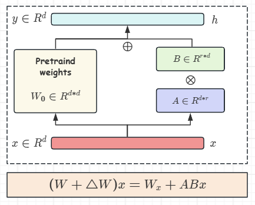

LLM从入门到进阶（吴恩达）- 2
参数高效微调（PEFT）
相较于全量微调，参数高效微调只更新小部分参数，大体方式如下：
- 冻结了大部分的模型权重，专注于微调现有的模型参数子集（特定的层或组件）
- 不触碰原始模型的权重，而是添加少量的参数或层，只微调新的组件
PEFT Method
- Selective Method（选择性方法）：只微调原始参数子集
- 选择特定组件或者特定层
- 选择单个参数类型
- Reparameterization Method（重新参数化方法）：通过创建原始网络权重的新低秩矩阵转换减少要训练的参数数量（如LoRA）
- Additive Method（加法方法）：通过保留所有原始LLM权重进行微调并引入新的可训练组件，如下：
- Adapters：在模型架构中添加新的可训练层，通常在编码器（Encoder）或者解码器（Decoder）的注意力或前馈层之后
- Soft Prompt：保持模型解构的固定和冻结，并专注于操纵输入以获得更好的性能。这可以通过向提示词嵌入（Prompt Embeddings）添加可训练参数或保持输入固定并重新训练嵌入权重来完成–>
Prompt Tuning
每种方法在参数效率，内存效率，训练速度，模型质量和推理成本上都有权衡
Lora（Low-Rank Adaptation）
Lora通过冻结原始模型的所有参数，并在某些特定层注入两个低秩矩阵 A 和 B，这些低秩矩阵包含了可训练的参数，通过只训练极少的参数，达到全量微调相近的性能：

| 符号 | 变量名 |
|---|---|
| 输入向量 | |
| 预训练权重 | |
| 增量参数矩阵 | |
| 低秩适应的权重矩阵(r << d) |
可以发现，微调的参数量从原先的d*d, 变成了2*d*r,大大减少的参数量，从而显著减少显存占用。对于LoRA微调，在训练时，会冻结预训练的权重
在初始化时，令
本博客所有文章除特别声明外，均采用 CC BY-NC-SA 4.0 许可协议。转载请注明来源 开摆人のBlog！
相关推荐

2025-09-15
LLM从入门到进阶（吴恩达）- 1
1.1 对单一任务进行微调灾难性遗忘（Catastrophic Forgetting）现象简述原因： 全量微调过程中改变LLM原始的模型权重表现：尽管可能在微调目标的单一任务上表现良好，但是会降低在其他任务上的性能 解决方法 确定灾难性遗忘是否真的会影响到你的使用场景 在只针对特定任务场景的情况下，模型的泛化能力并不被需要，则不会造成什么影响 同时在多个任务下进行微调 执行参数有效微调 Parameter Efficient Fine-tuning（PEFT） PEFT保留了模型的原始权重，并且只训练少量特定任务的适配器层（adapter layers）和参数 1.2 Evaluation MetricROUGE（召回率导向的摘要评估）ROUGE主要用于通过将自动生成的摘要和人工生成的参考摘要进行比较来评估生成文本的质量 Used for text summarizationcompares a summary to one or more reference summaries 在了解ROUGE的公式前，我们需要了解语言解剖学中的相关信息gram。如上图所示，在句...
2025-09-05
算法图解学习笔记-1
二分查找1.1 示例code12345678910111213def erfen_search(arr, target): low = 0 high = len(arr) while low <= high: mid = (high - low)//2 guesss = arr[mid] if guess < target: high = mid - 1 elif guess == target: return mid else: low = mid + 1 return None 数组和链表需要存储多项数据时，存在两种基本方式——数组和链表。 需要明确的是数组和链表并非都适用于所有的情形，因此我们需要知道他们的差别&优缺点。 数组使用数组意味着所有的元素在内存中都是相连的（需要分配连续的内存空间）。 在数组中添加新元素时，若当前连续空间后的内存已被占用，则需要重新分配连续的内存。 我...